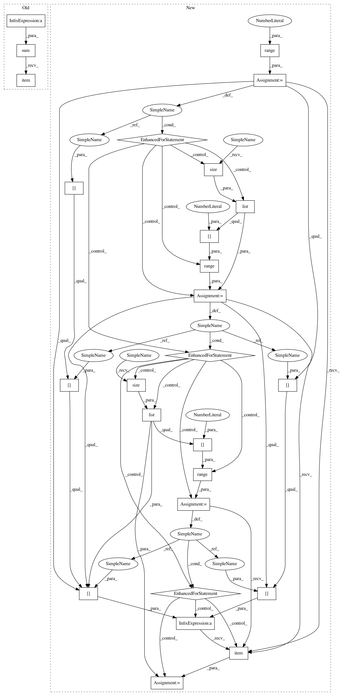

4e26df090dbb8ebdb371301b9fa4deccf799ed80,qucumber/utils/test_cplx.py,TestCplx,test_make_complex,#TestCplx#,8
Before Change
def test_make_complex(self):
x = torch.tensor([[1,2],[3,4]])
y = torch.tensor([[5,6],[7,8]])
result = torch.sum(cplx.make_complex(x,y) -
torch.tensor([ [[1,2],[3,4]], [[5,6],[7,8]] ],
dtype = torch.double)).item()
self.assertEqual(result, 0.0)
def test_scalar_mult(self):
scalar = torch.tensor([2,3], dtype = torch.double)
After Change
expect = torch.tensor([ [[1,2],[3,4]], [[5,6],[7,8]] ],
dtype = torch.double)
result = 0.0
for i in range(2):
for j in range(list(x.size())[0]):
for k in range(list(x.size())[1]):
result += (cplx.make_complex(x,y)[i][j][k] -
expect[i][j][k]).item()
self.assertEqual(result, 0.0)
def test_scalar_mult(self):
scalar = torch.tensor([2,3], dtype = torch.double)
In pattern: SUPERPATTERN
Frequency: 3
Non-data size: 26
Instances
Project Name: PIQuIL/QuCumber
Commit Name: 4e26df090dbb8ebdb371301b9fa4deccf799ed80
Time: 2018-08-02
Author: ijsdevlu@edu.uwaterloo.ca
File Name: qucumber/utils/test_cplx.py
Class Name: TestCplx
Method Name: test_make_complex
Project Name: PIQuIL/QuCumber
Commit Name: 4e26df090dbb8ebdb371301b9fa4deccf799ed80
Time: 2018-08-02
Author: ijsdevlu@edu.uwaterloo.ca
File Name: qucumber/utils/test_cplx.py
Class Name: TestCplx
Method Name: test_make_complex
Project Name: PIQuIL/QuCumber
Commit Name: 4e26df090dbb8ebdb371301b9fa4deccf799ed80
Time: 2018-08-02
Author: ijsdevlu@edu.uwaterloo.ca
File Name: qucumber/utils/test_cplx.py
Class Name: TestCplx
Method Name: test_outer_prod
Project Name: PIQuIL/QuCumber
Commit Name: 4e26df090dbb8ebdb371301b9fa4deccf799ed80
Time: 2018-08-02
Author: ijsdevlu@edu.uwaterloo.ca
File Name: qucumber/utils/test_cplx.py
Class Name: TestCplx
Method Name: test_kronecker_prod